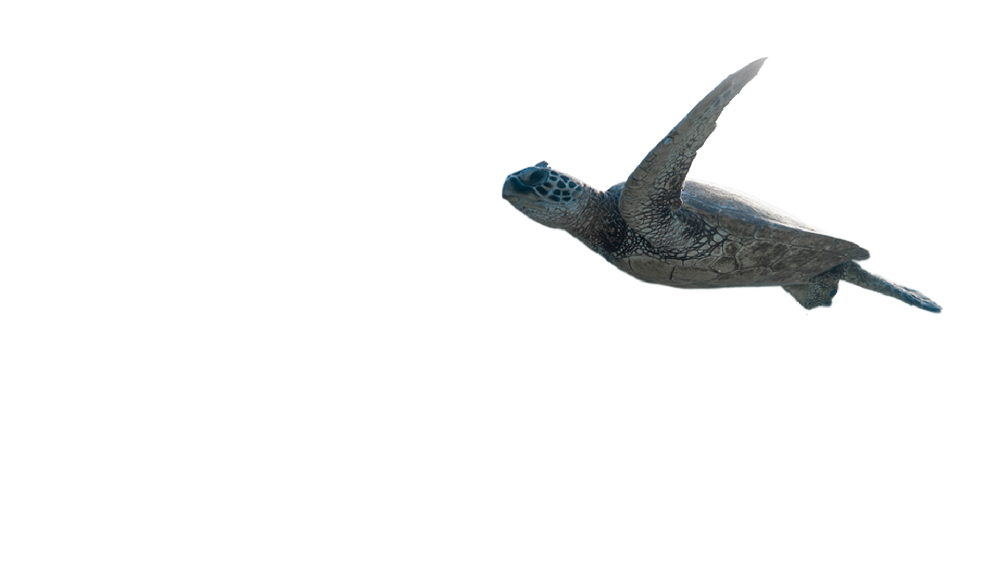
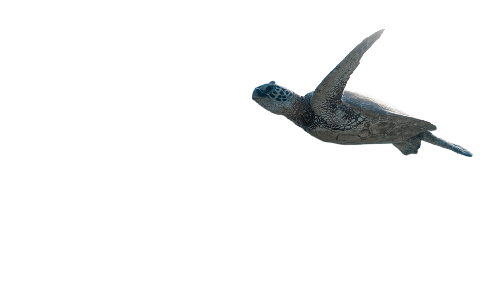

Tropical Fish
A nice picture of fish
Ship
A picture token at the Atlantic Ocean
Fish are abundant in most bodies of water. They can be found in nearly all aquatic environments, from high mountain streams to the abyssal and even hadal depths of the deepest oceans, although no species has yet been documented in the deepest 25% of the ocean. With 34,300 described species, fish exhibit greater species diversity than any other group of vertebrates.
Fish species diversity is roughly divided equally between marine and freshwater ecosystems. Coral reefs in the Indo-Pacific constitute the center of diversity for marine fishes, whereas continental freshwater fishes are most diverse in large river basins of tropical rainforests, especially the Amazon, Congo, and Mekong basins. More than 5,600 fish species inhabit Neotropical freshwaters alone, such that Neotropical fishes represent about 10% of all vertebrate species on the Earth. Exceptionally rich sites in the Amazon basin, such as Cantão State Park, can contain more freshwater fish species than occur in all of Europe